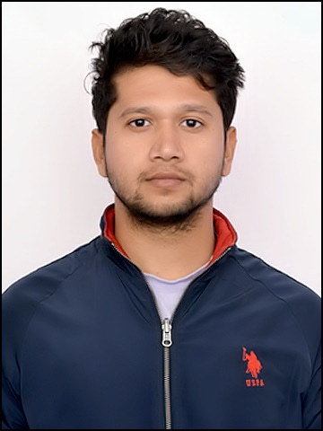
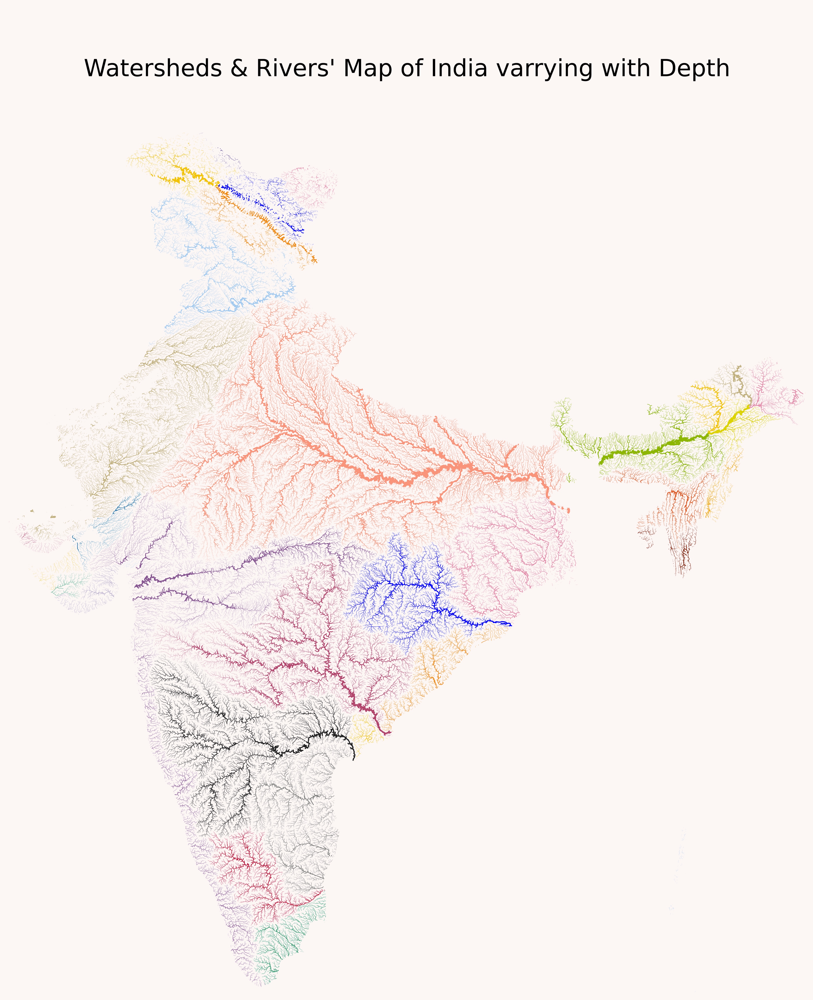
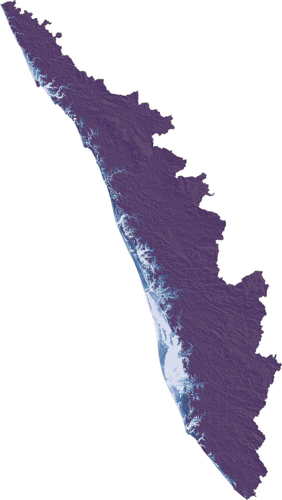
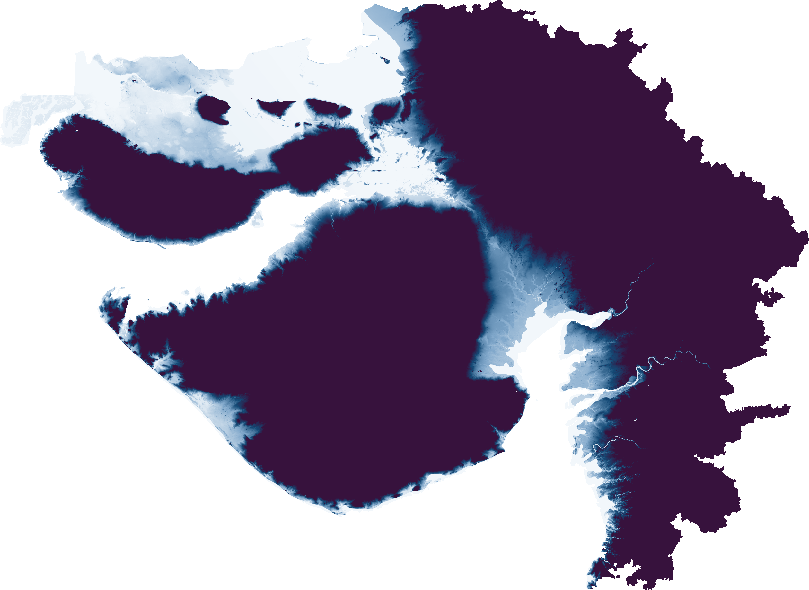
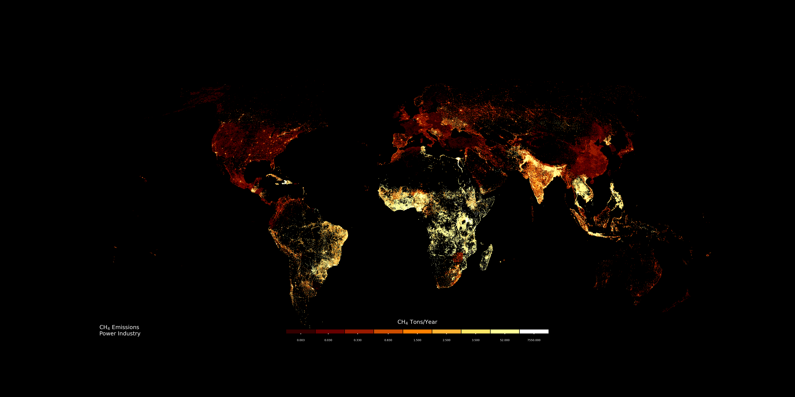

03 — Portfolio
7+ years building ML-driven geospatial systems for climate science, carbon MRV, and forest monitoring — at Thryve Earth and Plant-for-the-Planet.

I’m a Remote Sensing and GIS Lead with 7+ years of experience applying machine learning, computer vision, and geospatial AI to real-world climate and carbon challenges. My work sits at the intersection of satellite data science and production engineering — from writing GEE analysis pipelines to shipping full-stack platforms used by carbon project developers.
Currently, I lead ML strategy and productization at Thryve Earth, building a carbon project management platform that automates GIS eligibility analysis and carbon modeling aligned with VCS and Gold Standard. I also work part-time with Plant-for-the-Planet, where I built the TFFF Watch Tool and the EUDR Tracer compliance system.






Open to consulting opportunities in remote sensing, carbon MRV, geospatial AI, and climate tech. Let’s connect and make an impact.
ttushar684@gmail.com